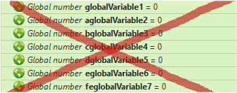
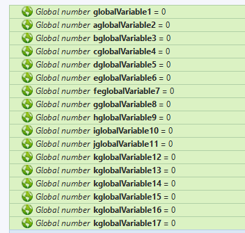
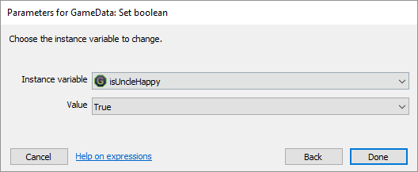
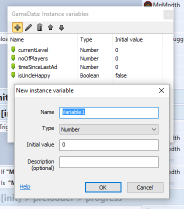
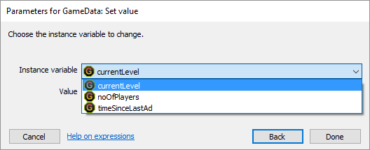

Globais – Construct 2 Plugin – Alternativa para variáveis globais nativas

Por que variáveis globals nativos são ruins?
Existem discussões sobre as variáveis globais C2 nativas serem boas ou não, no fórum Scirra e além. Algumas pessoas
dizem que os globais são boas, alguns que não são. Estou neste segundo grupo e é por isso que fiz esse plugin.
O maior problema com as variáveis globais é que eles trazem problemas para o projeto de várias maneiras.
Questão# 1 - lista de variáveis
Variáveis globais aparecem na lista de variáveis juntamente com variáveis locais. Em projetos maiores, começa a ser
realmente irritante, pois torna-se desconfortável encontrar e escolher variável particular. Especialmente quando você
quer escolher a única e única variável local disponível em grupo / evento específico.
(Observe que o exemplo a seguir mostra apenas uma mistura de várias variáveis de cada tipo, vi grandes projetos com
mais de uma centena de variáveis globais!)

Questão# 2 - folhas de eventos poluídas
Os desenvolvedores do C2 tentam organizar variáveis globais, colocando-as em folhas de eventos separadas, o que, no
final, torna cabeçalhos de folhas poluídos com toneladas de várias declarações de variáveis.

Essa abordagem leva diretamente ao próximo problema.
Questão# 3 - onde diabos está a minha variável global ?!
Tentando agrupar variáveis globais, colocando então em várias folhas de eventos rapidamente termina em confusão de onde ele está
localizado. Isso pode não ser um problema para pequenos projetos, mas usar esta abordagem em pelo menos um projeto de médio porte com
muitas folhas de eventos é altamente frustrante. É fácil esquecer onde um mundo específico foi criado como globais por sua natureza
não pertence a uma seção do projeto. Então, depois de chegar a este ponto, as pessoas geralmente criam uma folha de eventos separada
apenas para globais. Uma folha de eventos vazia com toneladas de globais - esta também não é uma solução decente. Não vou colocar
uma print aqui por razões óbvias.
Questão# 4 - Vulnerabilidade
Você pode ter ouvido que as variáveis globais são perigosas para o projeto. Isso é verdade para globais reais em linguagens de
programação padrão, pois os globais são acessíveis em diferentes aplicativos em um ambiente particular. No entanto, não é um
problema para o C2, uma vez que as variáveis globais são apenas valores no objeto C2 de tempo de execução que não está acessível para
aplicativos de fora.
Qual é a boa alternativa?
Em primeiro lugar, você deve evitar variáveis globais tanto quanto você puder. As pessoas geralmente abusam de globals como espaços
reservados para qualquer operação lógica. Sempre que for possível, você deve usar variáveis locais, criando uma variável no evento
(abaixo de alguma condição) ou abaixo do grupo.
Mas não é possível viver sem passar dados em várias seções do nosso aplicativo e, portanto, precisamos de algum tipo de espaços reservados
globais. Podemos usar os objetos Dicionário ou Array, mas eles não são úteis, pois sua indexação é baseada em cadeia ou numérica e, por
enquanto, não temos preenchimento automático.
A solução mais inteligente que veio à minha mente é usar variáveis de instância, pois elas também são acessíveis a nível mundial e
possuem ainda mais recursos do que variáveis globais.
Globais Plugin
O Globals é apenas um plugin vazio. Não faz absolutamente nada. Não tenho condições, nenhuma ação e nenhuma expressão (exceto alguns nativos que são adicionados automaticamente pelo mecanismo C2). Isso não afeta o desempenho nem o uso de memória do aplicativo. Portanto, a solução alternativa decente para variáveis globais é usar variáveis de instância do plugin Globals. Vou listar algumas razões pelas quais considero esta uma solução decente.
Razão #1 - você pode criar uma variável de tipo booleano
Usar variáveis booleanas na verdade não difere da variável numérica com valores 0/1. Ainda é melhor visualmente de usar.
Em um futuo próximo falarei de
código limpo aplicado ao Construct 2.


Razão #2 - não falta nenhum recurso
Você ainda pode definir o nome da variável, o valor inicial e um comentário para a variável.

Razão #3 - você pode realmente agrupar suas variáveis
É possível ter muitas instâncias do plugin do Globals. Mude o nome de várias instâncias e use-as como grupos para suas variáveis "globais".

Razão #4 - não existe mais poluição na lista de variáveis
As variáveis e variáveis locais de Globals têm uma listagem diferente, então você sempre vê apenas as variáveis que você está
interessado na listagem.

Razão #5 - você ainda possui autocompleção
Ao contrário do dicionário, as variáveis de instância Globals podem ser usadas em expressões e ter autocompleção.

Considerações finais e 7 motivos para não utilizar variáveis globais nativas nos seus projetos
Tem os mesmos recursos que os globals nativos (e muito mais!)
Tem variáveis de tipo booleanas (não é possível com globals nativos)
Não polui a listagem de variáveis
Não polui as folhas de eventos
É possível agrupar variáveis (não é possível com globals nativos)
Isso não afeta a memória nem o uso da CPU
É grátis
Baixe o plugin diretamente ou Repositório da Scirra de plugins
Este artigo é uma tradução com pequenas adaptações do artigo original
Globals –
Construct 2 Plugin – Alternative for native global variable, "atualmente offline" do desenvolvedor
Toby que é criador do plugin Ultimate ADS que abordei no tutorial
Gerando o projeto Xcode no Mac usando Cordova CLI e também no
Trabalhando com Plugins no Cordova CLI.
Bons estudos